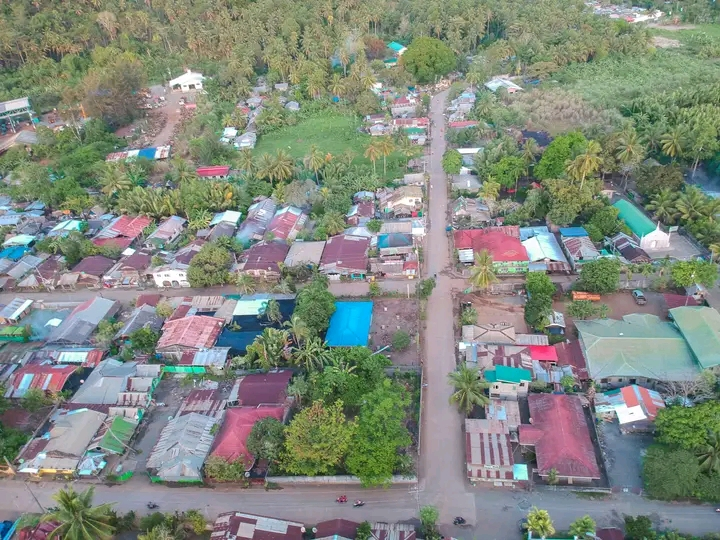
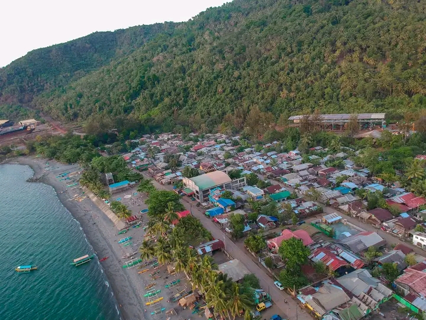
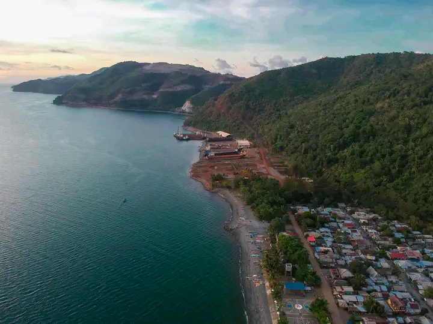
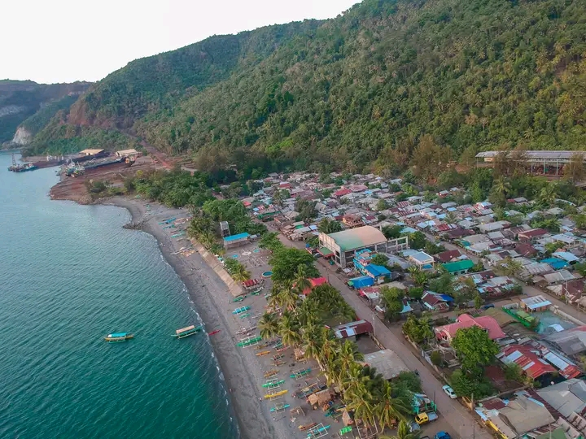
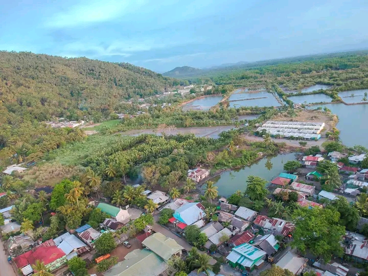

La Fraternidad is a barangay in the municipality of Tubay, in the province of Agusan del Norte. Its population as determined by the 2020 Census was 2,343. This represented 9.09% of the total population of Tubay.
The household population of La Fraternidad in the 2015 Census was 3,100 broken down into 750 households or an average of 4.13 members per household.
The population of La Fraternidad grew from 1,263 in 1990 to 2,343 in 2020, an increase of 1,080 people over the course of 30 years. The latest census figures in 2020 denote a negative growth rate of 6.25%, or a decrease of 840 people, from the previous population of 3,183 in 2015.
La Fraternidad is situated at approximately 9.1782, 125.5293, in the island of Mindanao. Elevation at these coordinates is estimated at 9.6 meters or 31.5 feet above mean sea level.